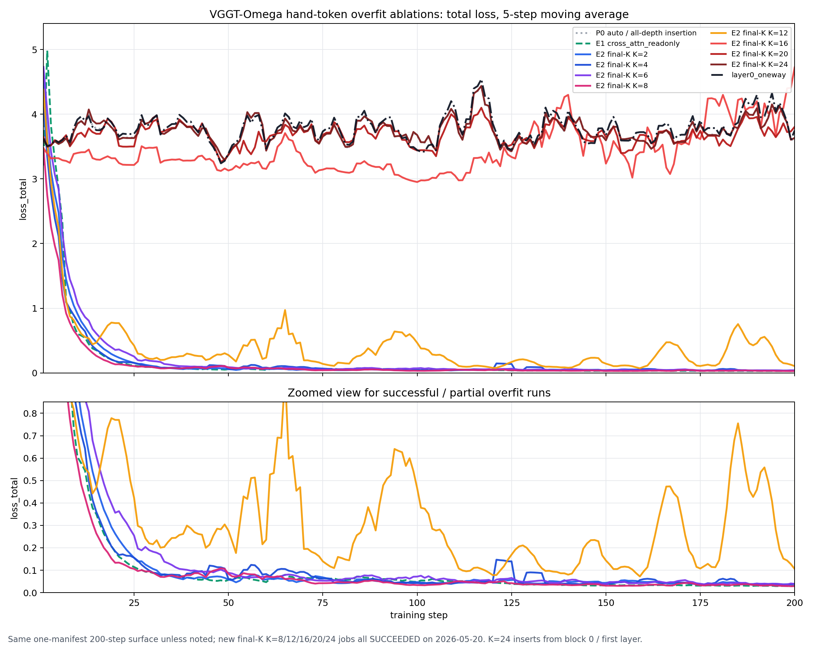

VGGT-Omega hand-token overfit ablations: final-K depth sweep through first layer, compared with prior token-mode runs.
| Task | Status | Commit | What landed |
|---|---|---|---|
| E2-FINALK-SWEEP | PASS | 219a113 | Submitted and monitored final-K K=8/12/16/20/24 one-manifest 200-step overfit jobs; all reached SUCCEEDED. |
| CURVE-PUBLISH | PASS | 219a113 | Collected old and new histories, generated a combined loss-curve figure, and published the comparison table/results. |
K=2/4/6/8 consistently overfit on this 200-step surface, while K=16/20/24 fail. K=12 is partial/unstable: final loss drops to 0.0868 but last20 remains 0.4001 due spikes.
K=24 inserts from block 0 / first layer and fails with last20 3.8823, close to layer0_oneway and auto/all-depth failures.
The new K=8 run reached final 0.0296 and last20 0.0324, comparable to K=2/4/6 and cross_attn_readonly.
| Aspect | Current state |
|---|---|
| New ACP jobs | K=8 pt-waadp8ia on p1 RESERVED; K=12/16/20/24 on share-space-01e SPOT after p1 quota rejection; all SUCCEEDED. |
| Output artifacts | Remote histories under logs/vggt_omega/*finalk{8,12,16,20,24}*; published assets include combined_loss_curves.png and overfit_results_summary.json. |
| Interpretation boundary | Runs use max_manifest_size=1 and match the prior E2 overfit command surface; this is a one-manifest surface, not a strict deterministic fixed-window proof. |
| Task | Priority | What's needed |
|---|---|---|
| NEXT-DESIGN-DECISION | P1 | Use final-K K=8 or smaller as the viable hand-token insertion window; avoid all-depth/first-layer bidirectional insertion unless adding stronger isolation or a different attention contract. |
| OPTIONAL-FIXED-WINDOW-RERUN | P2 | If a deterministic fixed-window claim is needed, rerun the chosen K values with a true fixed-window manifest/sampler instead of max_manifest_size=1. |

| Setting | K | Job | Workspace | Commit | First20 | Last20 | Final | Min | Verdict | Output dir |
|---|---|---|---|---|---|---|---|---|---|---|
| P0 auto / all-depth insertion | all | local | 5b7e16a | 3.722884 | 3.878674 | 3.781482 | 2.878428 @ 135 | flat/fails | logs/vggt_omega/hoi3r-vggt-omega-p0-handonly-lora-onewin200-20260520T082043Z_5b7e16a_r2 | |
| E1 cross_attn_readonly | n/a | local | 4b22cc6 | 0.998457 | 0.030392 | 0.029102 | 0.025739 @ 180 | overfits | logs/vggt_omega/hoi3r-vggt-omega-e1-frozen-crossattn-onewin200-20260520T4b22cc6 | |
| E2 final-K K=2 | 2 | local | 4b22cc6 | 1.033507 | 0.039063 | 0.046601 | 0.032173 @ 193 | overfits | logs/vggt_omega/hoi3r-vggt-omega-e2-finalk2-lora-onewin200-20260520T4b22cc6 | |
| E2 final-K K=4 | 4 | local | 4b22cc6 | 0.863934 | 0.038993 | 0.032824 | 0.026801 @ 195 | overfits | logs/vggt_omega/hoi3r-vggt-omega-e2-finalk4-lora-onewin200-20260520T4b22cc6 | |
| E2 final-K K=6 | 6 | local | 4b22cc6 | 1.220658 | 0.040473 | 0.033568 | 0.030986 @ 197 | overfits | logs/vggt_omega/hoi3r-vggt-omega-e2-finalk6-lora-onewin200-20260520T4b22cc6 | |
| E2 final-K K=8 | 8 | pt-waadp8ia | p1 RESERVED | 219a113 | 0.679387 | 0.032381 | 0.029642 | 0.026199 @ 195 | overfits | logs/vggt_omega/hoi3r-vggt-omega-e2-finalk8-lora-onewin200-acp-20260520T219a113 |
| E2 final-K K=12 | 12 | pt-ekrx170k | share SPOT | 219a113 | 1.048092 | 0.400069 | 0.086791 | 0.047980 @ 138 | partial | logs/vggt_omega/hoi3r-vggt-omega-e2-finalk12-lora-onewin200-acp-20260520T219a113 |
| E2 final-K K=16 | 16 | pt-vuavnbna | share SPOT | 219a113 | 3.334239 | 4.203138 | 4.922601 | 2.577082 @ 154 | flat/fails | logs/vggt_omega/hoi3r-vggt-omega-e2-finalk16-lora-onewin200-acp-20260520T219a113 |
| E2 final-K K=20 | 20 | pt-vvpdsjw3 | share SPOT | 219a113 | 3.684908 | 3.795927 | 3.945267 | 2.595718 @ 21 | flat/fails | logs/vggt_omega/hoi3r-vggt-omega-e2-finalk20-lora-onewin200-acp-20260520T219a113 |
| E2 final-K K=24 | 24 | pt-6y091231 | share SPOT | 219a113 | 3.744280 | 3.882254 | 3.768358 | 2.876684 @ 135 | flat/fails | logs/vggt_omega/hoi3r-vggt-omega-e2-finalk24-lora-onewin200-acp-20260520T219a113 |
| layer0_oneway | all | local | 219a113 | 3.754432 | 3.989648 | 4.012205 | 2.862129 @ 122 | flat/fails | logs/vggt_omega/hoi3r-vggt-omega-layer0-oneway-lora-onewin200-20260520T219a113 |
The final-K insertion window has a clear depth threshold on this one-manifest overfit surface: K=2/4/6/8 all overfit; K=12 is unstable/partial by last20; K=16/20/24 fail similarly to all-depth auto insertion and layer0_oneway. K=24 is the first-layer final-K condition and differs from layer0_oneway because native VGGT tokens can still attend hand tokens.
Machine-readable summary asset: overfit_results_summary.json.
Paste this into a new Claude Code session:
Read https://haonanhe.github.io/HOI3R-project-tracking/updates/2026-05-20-session-summary-vggt-omega-final-k-depth-sweep-overfit-results.json and continue from tasks_pending[0] (NEXT-DESIGN-DECISION [P1]: Use final-K K=8 or smaller as the viable hand-token insertion window; avoid all-depth/first-layer bidirectional insertion unless adding stronger isolation or a different attention contract.). Context: branch feat/vggt-omega-backbone-research@219a113; worktree /mnt/afs/haonan/hoi3r/HOI3R/.worktrees/feat-vggt-omega-backbone-research. Also read: docs/superpowers/plans/2026-05-18-vggt-omega-backbone-replacement.md.